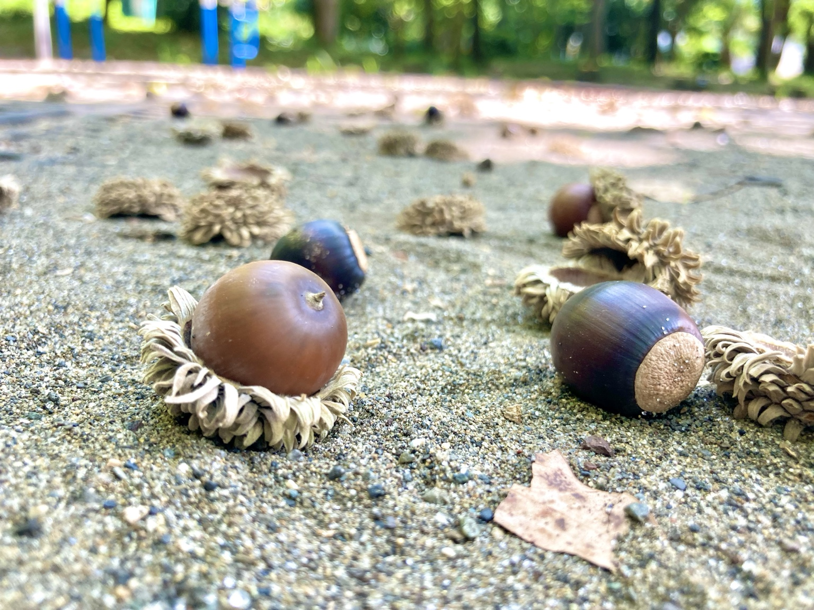
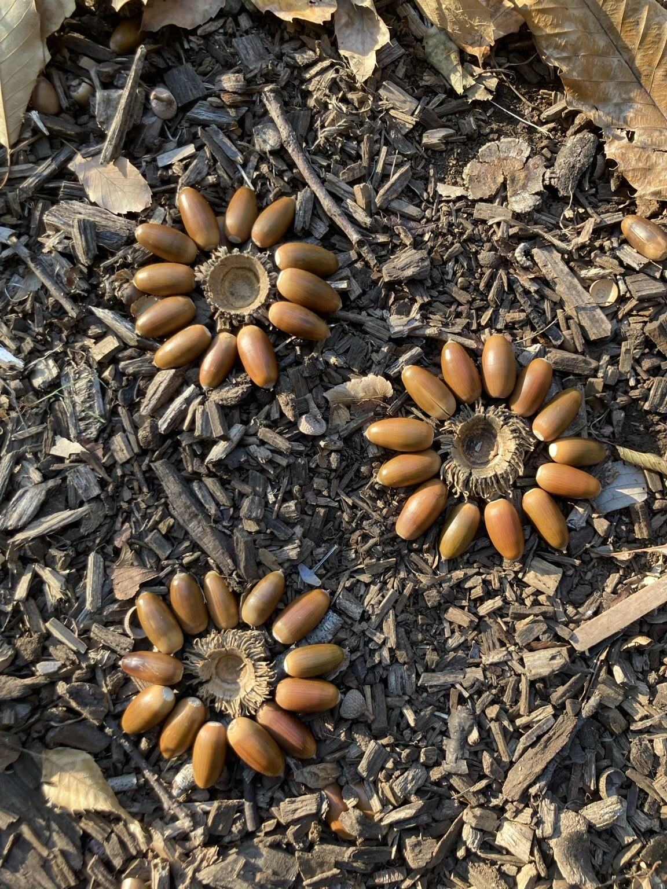

花が終わったあと、茎の先に残った種を見つけることがあります。春や夏には花に向いていた目が、秋には小さな種へと移ります。
自分で水をやり、成長を気にかけ、花が咲くのを待っていた植物。その種を採る時間には、育て方の知識だけでは語れない、その人と植物との関わりがあります。

育てた時間が、愛着になる
毎日眺めていた花には、いろいろな出来事が重なっています。
初めて咲いた日。水やりを忘れそうになった日。誰かに「きれいですね」と声をかけられたこと。
同じ種類の花でも、自分が関わって育てた一株には、その人だけの思い出があります。種を採るときに「よく咲いてくれたね」と話す言葉には、そんな時間が込められているのかもしれません。
園芸活動を支えるときには、種がどれだけ採れたかとともに、その植物が本人にとってどんな存在になっていたかにも目を向けたいと思います。
「また来年」が、楽しみになる
採った種を袋に入れると、今年の花が次の季節へとつながります。
「春になったら、またまこう」
「今度は、あの場所に植えたいね」
そんな言葉が本人から聞かれたら、大切に受け止めたいところです。そこには、これまで育ててきた経験と、これからやってみたいことがつながっています。
未来の楽しみは、大きな目標でなくてもよいのだと思います。「この花が、もう一度咲くところを見たい」。その人の暮らしの中に、待ち遠しいことが一つある。その意味を、園芸療法では大切にしたいと考えます。

種と一緒に、思い出も残す
種を保存する袋には、花の名前や採った日を書いておきます。そこに、本人の言葉や写真を添えるのも一つの方法です。
「玄関で、たくさん咲いた花」
「毎朝、水をあげていた花」
短い言葉でも、春に袋を開いたとき、育てていた時間を思い出すきっかけになります。
種を採る人、袋を用意する人、名前を書く人、そばで花の思い出を話す人。本人の好みや体調に合わせて、それぞれの関わり方を考えられます。
気持ちを急がせずに
花が終わって寂しい人もいれば、次は違う植物を育てたい人もいます。種取りには興味がなくても、今年の花の写真は残しておきたい、という人もいるでしょう。
「来年も育てましょう」と先に決めるより、「この花、どうでしたか」と、今年の時間を一緒に振り返ってみる。その中から生まれる気持ちを待つことも、大切な関わりだと思います。
実際に種を採るときは、植物ごとの採り方や保管方法を確認し、食べ物と間違えないよう、名前を付けて分けて保管しましょう。
小さな種に、次の季節を託す
種取りは、今年育てた植物との関わりを振り返り、次の季節へ手渡していく時間にもなります。

「来年も、この花に会いたい」
そんな思いが生まれたとき、その小さな種は、本人にとって未来を楽しみにする存在になるのかもしれません。